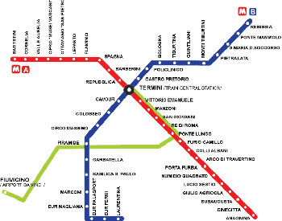

|
| Home The City Local Facts Travel Blogs Photo Gallery |
TransportationItaly has well developed public and private transportation options. Italian rail network is extensive, especially in the north, generally eclipsing the need for an alternative such as bus or air (both of which, however, exist to some extent). While a number of private railroads exist and provide mostly commuter-typeservices, the national railway, Ferrovie dello Stato, also provides sophisticated high-speed rail service that joins the major cities of Italy from Naples through northern cities such as Milan and Turin. In Florence, the easiest way to get around are by walking or using the bus system. There is also the Santa Maria Novella Train station which is easy to use and good for taking easy day trips to near by town and sights. Italy has many resouces and ways of transportation to offer. As a student, it is benfical to consult with a travel angency. There are mant agencies throughout the city of Florence and thye can get you some of the best deals. Using an agency is also a excellent idea if you are planning to travel outside of the country while you are studying abroad. An agency that i found helpful was, Florence For Fun. They have many opportunities for students to participate in and they are open year long. Helpful Maps:Florence Metro | Florence Bus System | Map of Siena  |